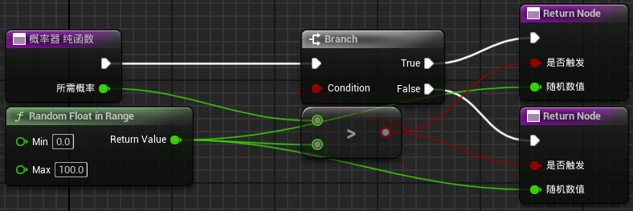
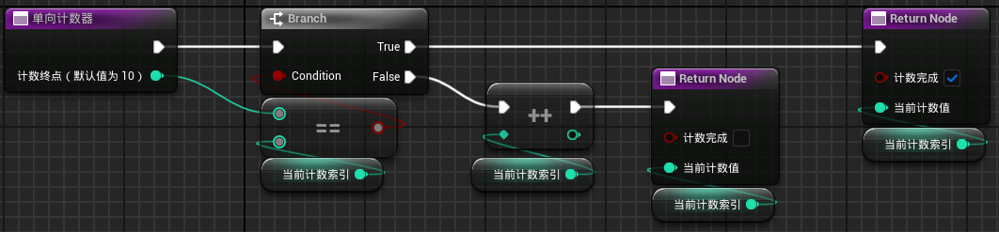
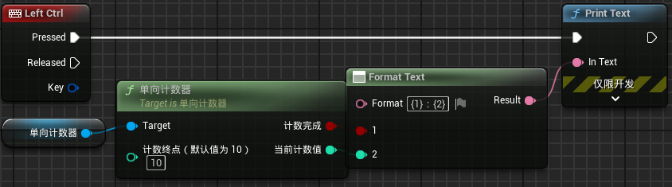
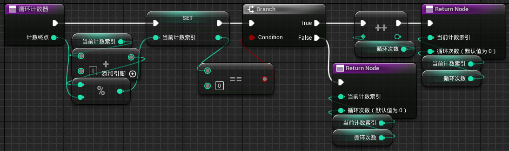
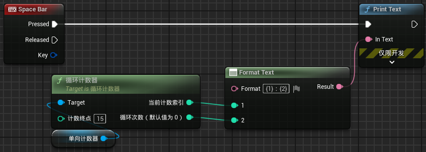

输入一个概率数值，100以内，返回这次判断是否触发。同时输出这次随机到的数值。
这个概率器能同时实现随机数产生器，只需要对随机数值进行比例修改
从1开始计数，数到某个提供的特定值返回TRUE，并将计数索引固定为该特定值。
当触发某个事件时开始计数，每触发一次计数索引值+1
验证
在单向计数器的基础上，每次计数完成便将索引值变为0。
算法设计上用%，从0开始计数，数到n-1。
循环计数器需要返回循环次数，默认值为0
创建循环计数器ActorComponent。定义三个变量：当前计数索引、计数终点、循环次数。可编辑实例、生成时公开。
创建函数，命名为“循环计数器”。纯函数。
验证
需要将元素种类变量可编辑实例、生成时公开
